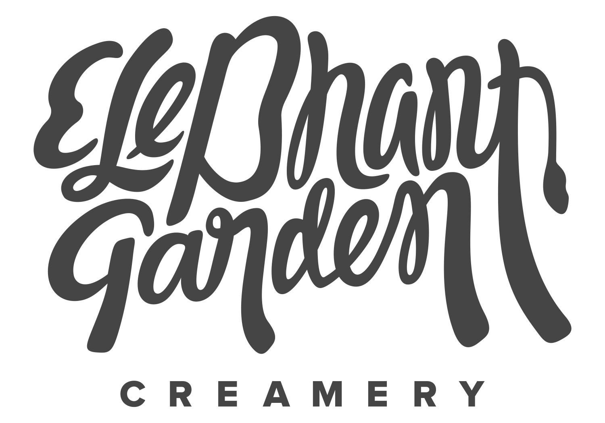
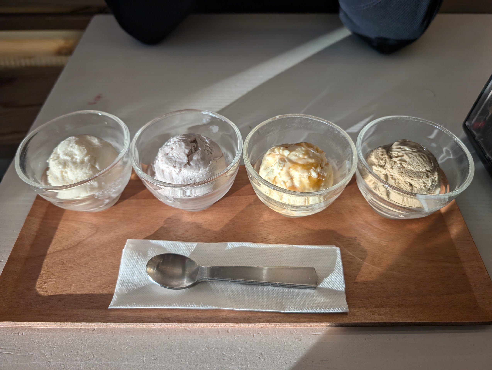
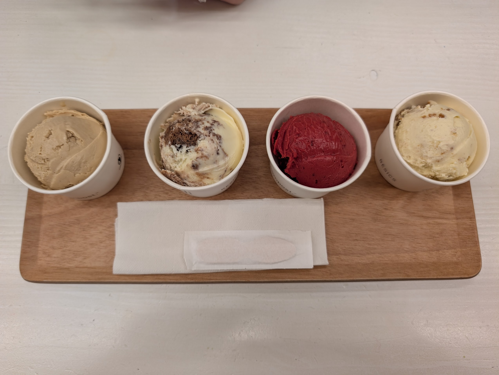
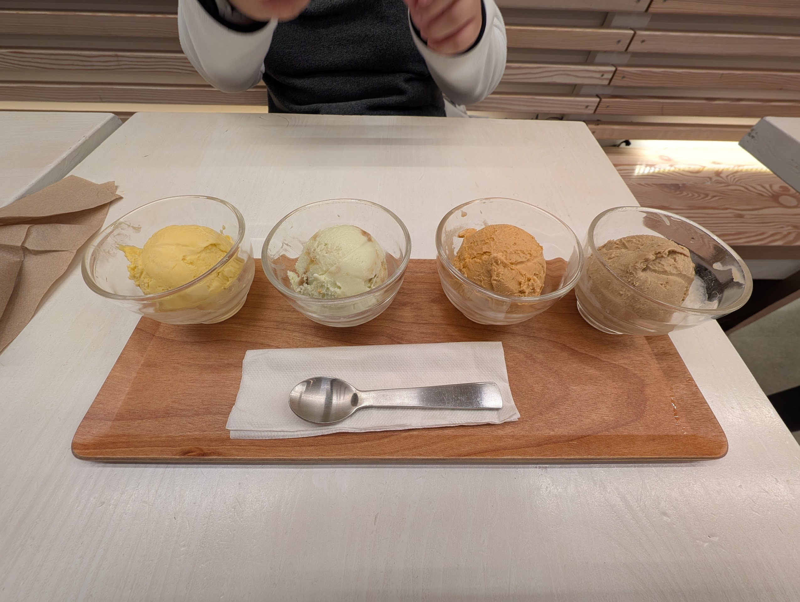
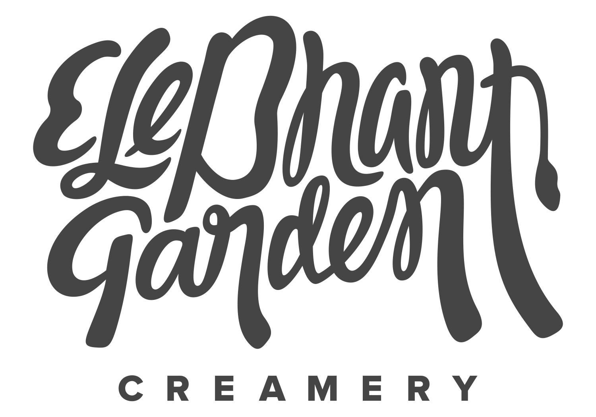
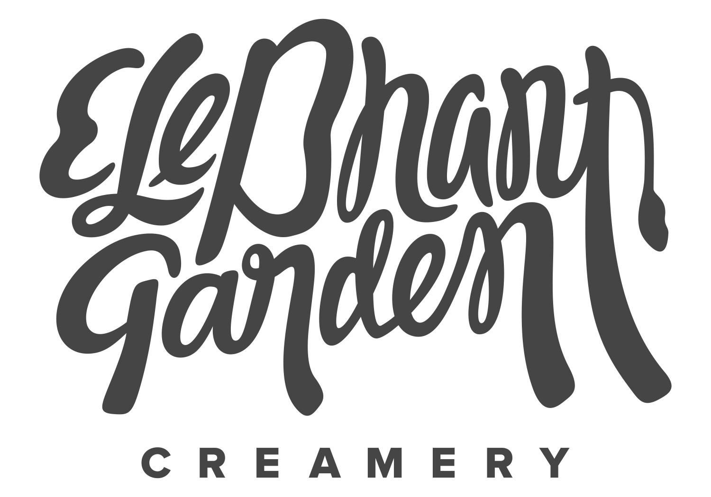

On July 9th, I (assisted by Matt Oddo) hosted a blind ice cream taste testing and judging event for
the HCI research group I'm in, called MUX (Multimodal User eXperience). I chose three local ice cream
stores and a grocery store brand. From each brand, I got two of the most popular flavours. During the
event, Matt and I scooped ice cream into small paper cups which we gave to participants. We also told
the participants a code (i.e. A1, C2) for the ice cream. Once everyone had tried every ice cream, I
asked them to vote by filling out a Google form with their favourite and second favourite flavours.

The three local stores were Earnest (code A), Rain or Shine (B), and Elephant Garden (D). The grocery store brand was
Ben & Jerry's (C). For all of these brands except for Elephant Garden, I got one dairy flavour and one
vegan flavour. Elephant Garden was out of their vegan flavour when I tried to buy it, so I got a
second dairy flavour instead.
The three Vancouver stores are spread around the city. This map shows the locations. Earnest has the
most physical locations, mostly
in East Vancouver and one in North Vancouver. Rain or Shine has a pop-up store downtown, and has three
permanent physical locations at UBC, in Kitsilano, and on Cambie. Finally, Elephant Garden has one
location on Commercial Drive.
I purchased the pints for this event from the Earnest location on Frances Street and from the Rain or
Shine location at UBC, and from the single Elephant Garden location on Commercial Drive. Ben & Jerry's
is sold at most grocery stores, and I bought mine from the Safeway at Broadway and Commercial.
The aftermath of the event, after we had revealed the ice cream brands and flavours and had put them
out for people to finish off. We used paper towels to show which cups of ice cream were associated with
which code.
This bar chart shows how the votes were distributed between flavours. Since participants voted for both
their favourite and second favourite, you can use the slider below to choose how much weight to give the
second favourite flavours.
0%
100%
The clear winner is Elephant Garden's Matcha Honeycomb Nugget. When counting second favourite votes with
the same weight as favourite votes, the second most popular was London Fog. It seems our group likes tea
flavoured ice cream! I also find it interesting that both of the Cookies & Cream flavours from two
different brands got the same number of votes, that Earnest's vegan flavour was more popular than their
dairy flavour, and that the vegan Rain or Shine flavour was by far the lease popular.



I have personally tried a lot of ice cream in Vancouver. My favourite place is definitely Elephant Garden,
and it was so validating to see my preference reflected in the results! Elephant Garden has a list of staple
flavours that are always available, and every month they have four different rotating flavours. I make it
a point to try all of their flavours every month, and my favourite way to do that is to go with a friend and
get a flight with all four new flavours. These pictures show some of the flights of ice cream that I've gotten
over the last year or so. I highly recommend trying this place out!
I was also curious about patterns in people's first and second choices. In this sankey diagram, participants'
top choices are on the left and their second choices are on the right.
I don't see any huge trends, probably since we didn't have enough data. But some small trends are that the most
popular second choice among those who preferred matcha honeycomb was London fog, which is also tea based! I also
see that no one who chose one of the cookies and cream flavours chose the other one as their second favourite.
 
